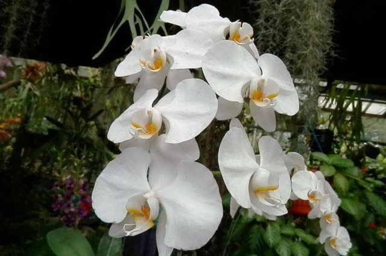
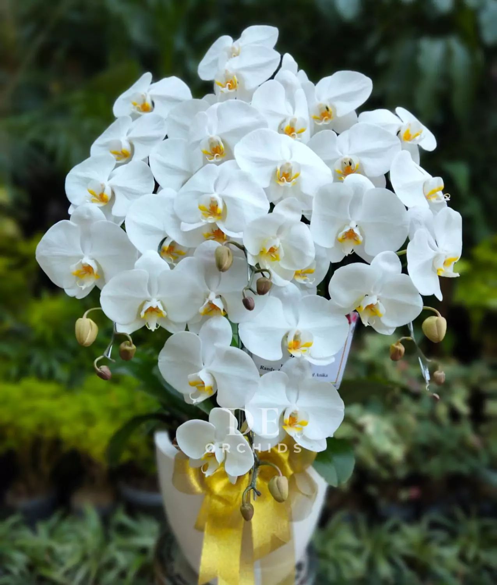
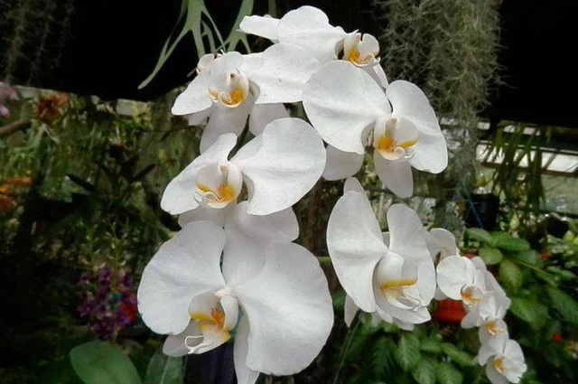
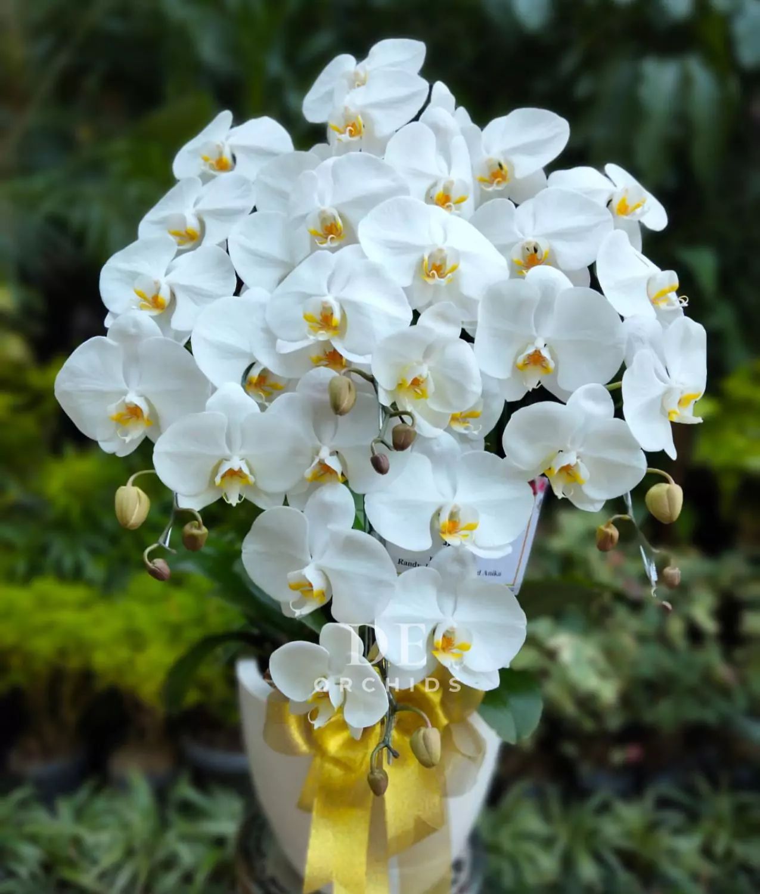

Anggrek Bulan (Phalaenopsis amabilis) adalah salah satu bunga anggrek paling terkenal di Indonesia dan ditetapkan sebagai Puspa Pesona Nasional. Bunga ini memiliki kelopak berwarna putih lembut dengan sentuhan kuning dan ungu di bagian tengahnya, menyerupai bentuk kupu-kupu yang anggun. Hidup sebagai tanaman epifit, anggrek bulan tumbuh menempel pada batang pohon besar di hutan tropis tanpa merugikan inangnya. Keanggunan, daya tahan mekarnya yang lama, serta kemampuan beradaptasi menjadikan anggrek bulan populer sebagai tanaman hias.
| Nama Ilmiah | Phalaenopsis amabilis |
|---|---|
| Famili | Orchidaceae |
| Habitat | Hutan tropis Indonesia |
| Tipe | Epifit |